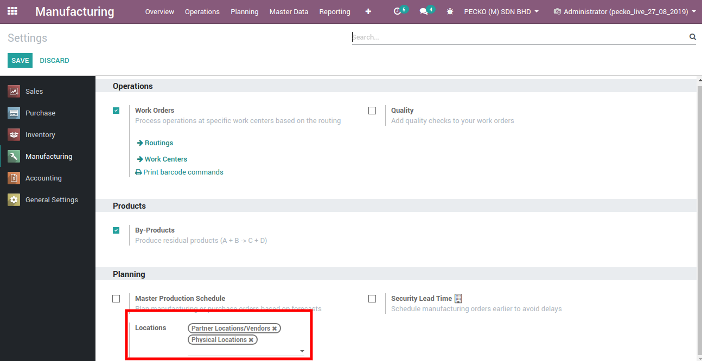
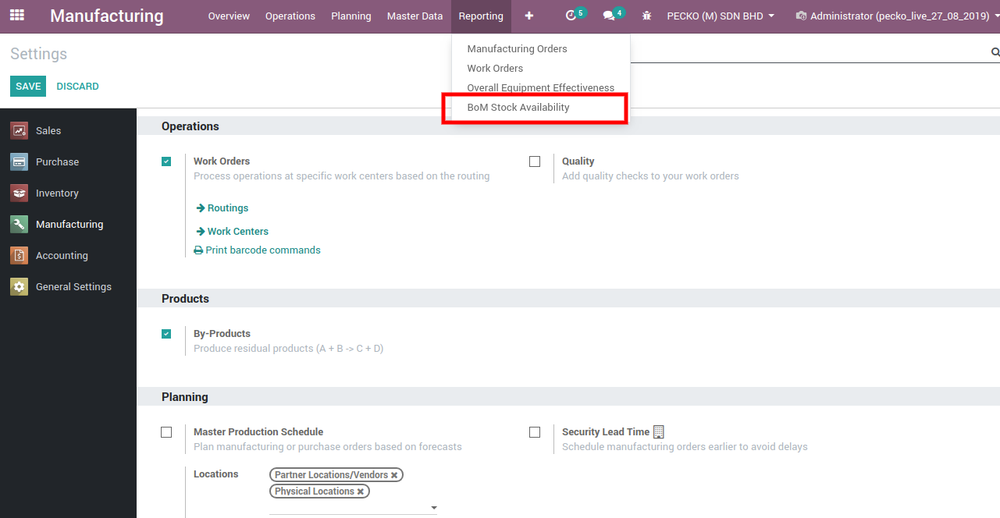
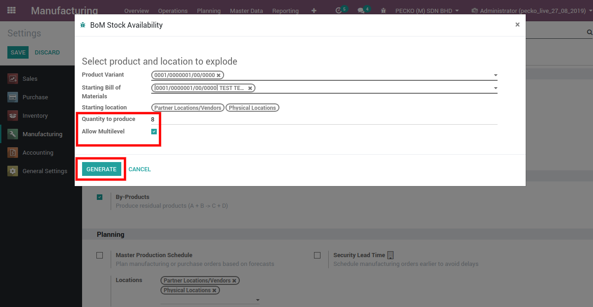
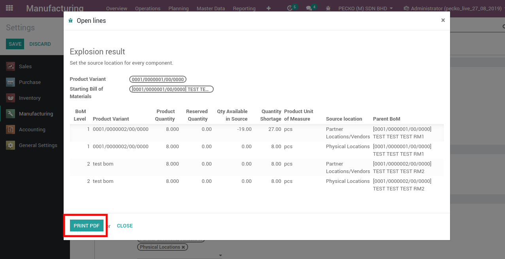

By Using this module PDF report will be Generated With Multi BOMS and show the stock available in the Multi source location for multiple product variants in two ways.Multi level BOM and Top level BOM.
Enable the configuration locations and set to check the BOM Stock.
Click the menu and enter the product variants and starting bill of materials.
Enter the quantity and enable the multi-level configurations,so that multi level BOM lines will be generated.
Generate the Wizard and it will generate multi-level BOM lines and print the PDF report.
